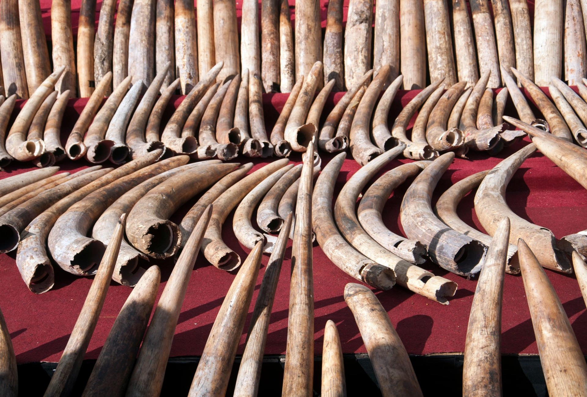
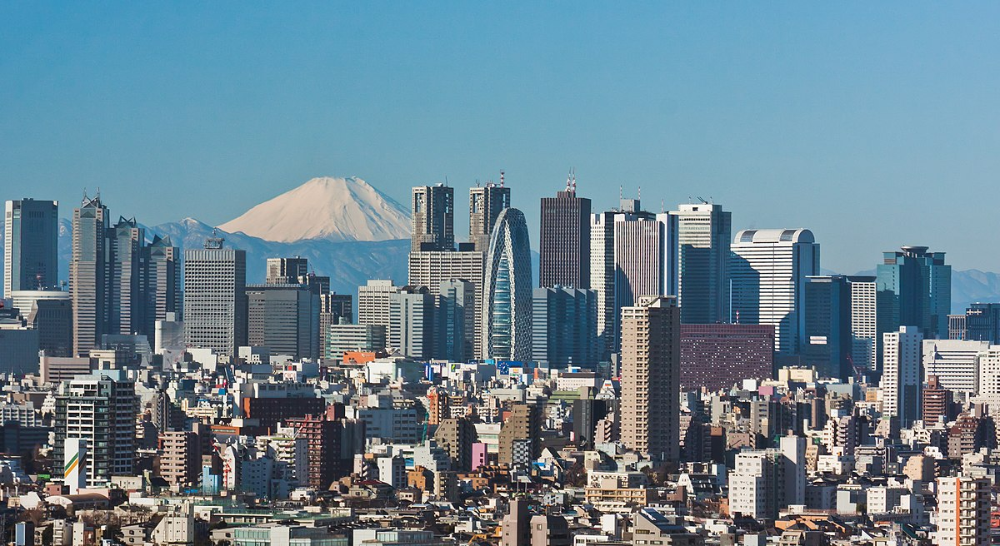
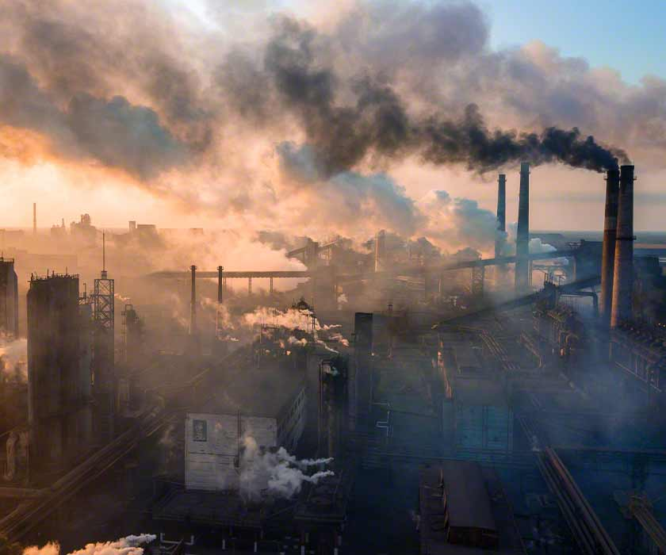
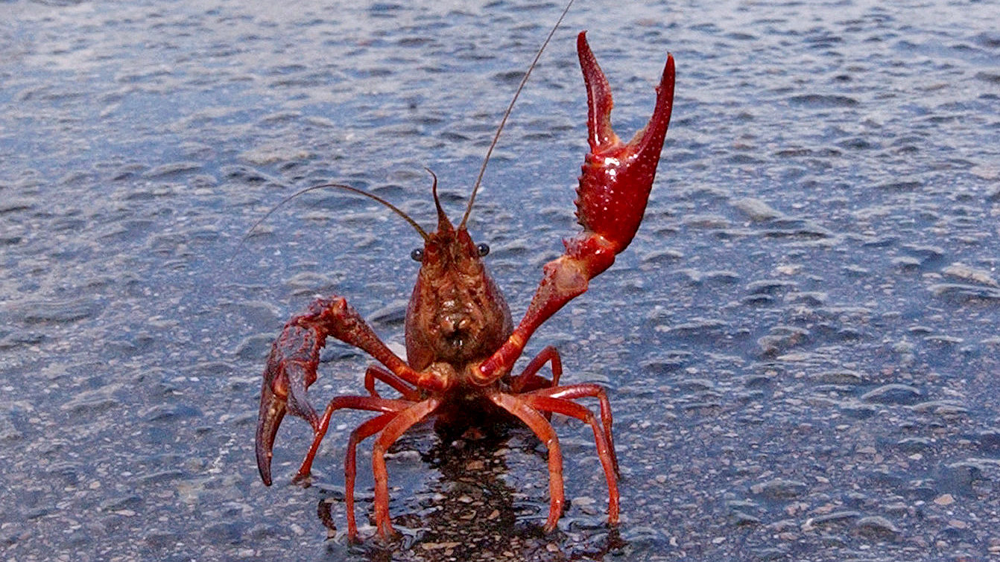

Human activity, mostly for food production and forestry, is transforming landscapes. Today, one third of all land is degraded or degrading, which harms biodiversity and jeopardises essential ecosystem services such as carbon storage. Protected areas offer a solution. If effectively managed and fairly governed, such areas can safeguard nature and cultural resources, protect human health and well-being, provide sustainable livelihoods and so support sustainable development.
To open more information tap on the header of every problem3
Cutting trees can result in the loss of habitat for animal species, which can harm ecosystems. According to National Geographic, "70 percent of Earth’s land animals and plants live in forests, and many cannot survive the deforestation that destroys their homes."
Poaching does not just affect the lifestyle of animals. The effect is felt throughout all areas of human life; from food supply, to creating clothes, and even in areas such as construction, getting proper nutrition, and curing illnesses and diseases. Poaching also contributes to lack and/or depletion of natural resources provided by endangered animals. This effects a few civilizations that still depend on old fashioned hunting and forging methods. When their game becomes threatened and endangered, they will be susceptible to starvation. In other instances, huge traps that are left behind by careless poachers threaten the lives of humans, animals, and plant life. Poaching has also been recorded to play a role in the spread of food-borne illnesses. This is because poached meat is not monitored or inspected by the government, which allows cases such the country wide spread of Ebola from monkey meat in Congo and the outbreak of anthrax in Uganda too. To know more read the website in the header.
Expansion of human settlements affects nature reserves in various ways. Planning ahead can help to divert or mitigate the impacts but a good understanding of these impacts is a prerequisite. In this study, we estimated the impacts caused by the expansion of human settlements on nature reserves in China by 2050 under different development and conservation scenarios. Our results show that 5016 km2 of nature reserves may be encroached by the expansion of human settlements under the scenario of high growth and weak protection, a ten-fold increase compared to 2010. To know more read the website in the header.
Since Russian forces invaded Ukraine in February, the world’s attention has been focused on the nation’s heavily shelled cities. But Ukraine, in an ecological transition zone, is also home to vibrant wetlands and forests and a large swath of virgin steppe. Russian troops have already entered, or conducted military operations in, more than one-third of the nation’s protected natural areas, Mr. Krasnolutskyi said: “Their ecosystems and species have become vulnerable.” To know more read the website in the header.
Well, believe it or not, the air pollution level in King’s Canyon National Park, is THREE TIMES higher than levels in densely populated cities such as Los Angeles and Houston. This seems pretty ironic, isn’t it? As an outdoor enthusiast myself, I’m always looking forward to breathing the crisp, mountain air again when I’m overseas for a hike.. but what if its air that is filled with ozone, which makes it harder to breathe, while inflaming and irritating our lungs? In reality, the National Parks Conservation Association has reported that 96% of the 417 national parks assessed in the U.S are plagued by significant air pollution problems in at least one of the four categories, as shown below. To know more read the website in the header.
The biggest effect wildfire has on wildlife habitat is by altering the three things animals need most: food, water, and shelter. Tender understory plants and shrubs that provide food are lost, and this loss often results in wildlife moving away to areas where food, water, and shelter are more readily available. To know more read the website in the header.
